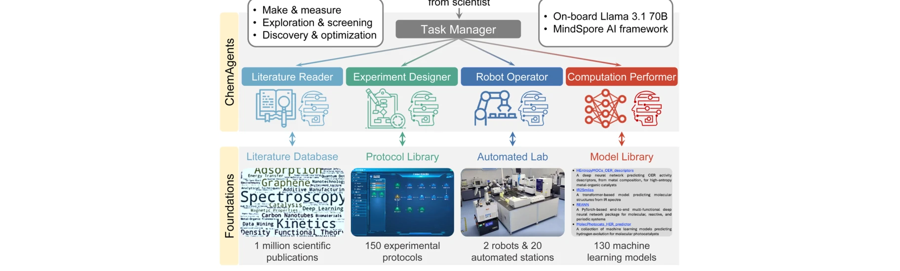
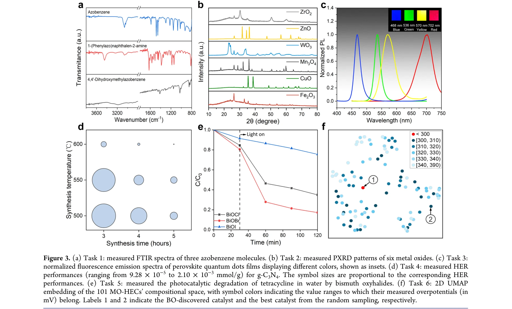

저자: Tao Song, Man Luo, Xiaolong Zhang, Linjiang Chen, Yan Huang, Jiaqi Cao, Qing Zhu, Daobin Liu, Baicheng Zhang, Gang Zou, Guoqing Zhang, Fei Zhang, Weiwei Shang, Yao Fu, Jun Jiang, Yi Luo | 날짜: 2025-04-16 | DOI: 10.1021/jacs.4c17738

Figure 1. The LLM-based multiagent system, ChemAgents, comprises a Task Manager agent, which manages four role-specific
LLM 기반 계층적 멀티에이전트 시스템인 ChemAgents를 이용한 자율 화학 로봇이 복잡한 다단계 실험을 최소한의 인간 개입으로 자동 수행할 수 있는 시스템을 개발했다. 이는 온디맨드 자율 화학 연구를 실현하여 화학 발견을 가속화하고 고급 실험 능력에 대한 접근성을 민주화한다.

Figure 3. (a) Task 1: measured FTIR spectra of three azobenzene molecules. (b) Task 2: measured PXRD patterns of six met
Figure 1. The LLM-based multiagent system, ChemAgents, comprises a Task Manager agent, which manages four role-specific
총평: 이 연구는 계층적 멀티에이전트 시스템으로 LLM의 능력을 증폭시켜 실제 로봇 화학실에서 자율 연구를 효과적으로 수행하는 혁신적 시스템을 제시했다. 화학 자동화 분야에서 LLM과 로봇 하드웨어의 통합 모델로서 높은 가치가 있지만, 안전성 검증과 다양한 화학 도메인으로의 일반화 가능성에 대한 추가 연구가 필요하다.